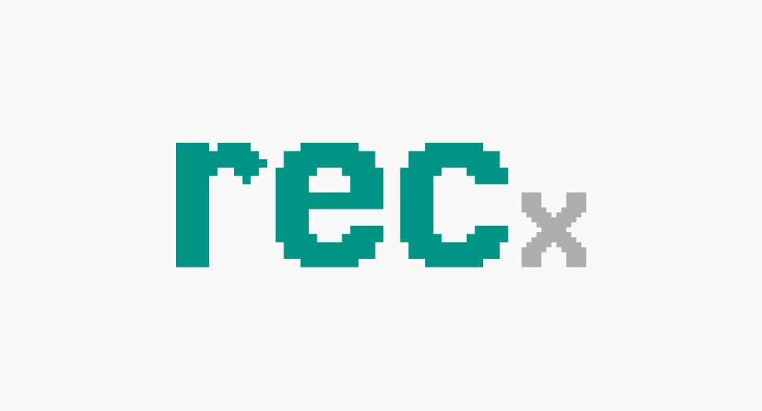
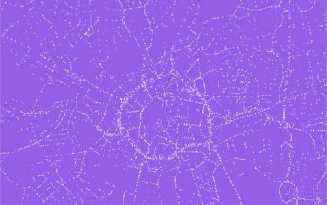

BlueCrest
Front-office tradingQuantitative development within a front-office trading team, building systematic trading systems.
Senior Quantitative Developer
Front-Office Systematic Trading
London, UK
I work across the research and engineering behind systematic trading: understanding the model, building the software and taking responsibility for it in production.
My background spans hedge funds, market making, leading a data team and academic research. Alongside my work in industry, I publish at OSQuant and build open-source Python tools.
I’m interested in senior front-office roles at hedge funds and systematic investment firms in London. Get in touch.
Quantitative development within a front-office trading team, building systematic trading systems.
Engineering for systematic equities and options strategies, spanning data pipelines and production trading workflows.
Development for index arbitrage, trading-system monitoring and improvements to engineering workflows. Mentoring junior engineers.
Led the data function across analytics, data engineering and machine learning, connecting technical delivery with company strategy.
Built marketplace machine learning and data systems, including recommendations, moderation and task classification.
Selected pieces from OSQuant. Mathematics, implementation and the things that matter when a model leaves the notebook.
Latent factors, rotations and the challenge of keeping a statistical model stable in practical use.
From estimating tail risk to portfolio optimisation, with working code.
Evaluation, variance and correlation, and shrinkage.
Turning trading logs into useful operational visibility.

Reconciliation tests for pandas DataFrames. A small library for checking that changes to data pipelines produce the changes you expect, with explicit tolerances.

An unofficial Google Street View Python client for accessing and downloading panoramas, including historical imagery.
Before industry, I worked in academic research on machine learning, financial time series and online behaviour. Selected peer-reviewed work:
For senior quantitative development opportunities in London, email me or connect on LinkedIn.